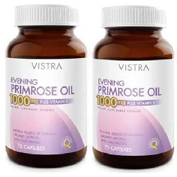

Evening Primrose Oil

Evening Primrose Oil ဟာ သမပိုင္း၌ ေႏြဦးရာသီမွာ အဝါေဖ်ာ႔ေဖ်ာ႔အပြင့္ေတြ ပြင့္ေလ့ရွိၿပီး အေလ့က်ေပါက္ပန္း ပင္တစ္မ်ဳိးမွ ရရွိတဲ့ အဆီ ျဖစ္ပါတယ္။ သဘာ၀အဆီတစ္မ်ဳိး ျဖစ္ၿပီး ေဆးအေနနဲ႔လည္း ထုတ္လုပ္ အသံုးျပဳပါတယ္။
ဘယ္မွာသံုးလဲ
Evening Primrose Oil ကို ဓမၼတာလာတဲ့အခါ ရင္သား နာၾကင္တာကို သက္သာေစဖို႔အတြက္ သုံးပါတယ္။
ဒါေပမယ့္ ကင္ဆာေရာဂါကို ကာကြယ္ဖို႔နဲ႔ ကုသတဲ့ေနရာမွာေတာ့ အသုံးမျပဳပါဘူး။
ဘယ္လိုသံုးရမလဲ
- ေသာက္ေဆး အမ်ဳိးအစား ျဖစ္ပါတယ္။
- ေဆးအညႊန္း စာရြက္မွာ ညႊန္းၾကားထားတဲ့အတိုင္း ေသာက္သုံးသင့္ပါတယ္။
- ေသာက္သုံးေနစဥ္အတြင္း ေရာဂါ လကၡဏာ မသက္သာဘဲ ပိုမို ဆိုးရြားပါက ဆရာဝန္နဲ႔ ျပသဖို႔ လိုအပ္ပါတယ္။
ေဘးထြက္ဆိုးက်ိဳးဘာေတြရွိလဲ
- ဗိုက္ေအာင့္ျခင္း
- ပ်ဳိ႕ျခင္း အန္ျခင္း
- ဝမ္းေပ်ာ့ျခင္း
- ေခါင္းကိုက္ျခင္းတို႕ ျဖစ္တတ္ပါတယ္။
- ဆိုးဆိုးရြားရြား ဓာတ္မတည့္တာေတြေတာ့ ျဖစ္ခဲပါတယ္။
ဘာေတြသတိထားရမလဲ
- ေသြးယိုစိမ့္လြယ္ျခင္းနဲ႔ ေသြးမတိတ္ျခင္း ျပသနာေတြ ရိွပါက ဆရာဝန္နဲ႔ ေဆြးေႏြးဖို႔ လိုပါတယ္။
- အရက္စြဲေနျခင္း ဆီးခ်ိဳ ေရာဂါႏွင့္ အသည္းေရာဂါ မ်ားရိွပါက ဆရာဝန္ ညႊန္ၾကားခ်က္ႏွင့္သာ ေသာက္သုံးပါ။
- ကိုယ္ဝန္ေဆာင္မ်ားတြင္ ေသာက္သုံးရန္ မသင့္ပါ။ လိုအပ္ပါက ဆရာဝန္ႏွင့္ တိုင္ပင္ေဆြးေႏြးပါ။
- ႏို႕တိုက္မိခင္မ်ားဟာ ဆရာဝန္ ညႊန္ၾကားခ်က္ႏွင့္သာ ေသာက္သုံးရပါမယ္။
ေဆးအာနိသင္ဘယ္လိုရွိလဲ?
- ေသြးက်ဲေဆးမ်ား (Warfarin, Heparin, Clopidogrel) ႏွင့္ Aspirin ကဲ့သို႕ေသာ NSAID အုပ္စုဝင္ အကိုက္အခဲေပ်ာက္ေဆးမ်ားႏွင့္ Evening Primrose Oil ကို တြဲမေသာက္သင့္ပါ။ ေသြးယိုစိမ့္ျခင္းကို ျဖစ္ႏိုင္ေသာေၾကာင့္ ျဖစ္ပါတယ္။
- ဒါ႔အျပင္ Evening Primrose Oil ကို ေသာက္ထားပါက ဓာတ္ခြဲခန္း ေသြးစစ္ျခင္း (Bleeding Time, Cholesterol Levels) အေျဖမ်ားကို မွားႏိုင္ပါတယ္။
ေဆးေသာက္လြန္ရင္ ဘာေတြျဖစ္မလဲ
ေဘးထြက္ဆိုးက်ိဳး လကၡဏာမ်ား ဆိုးရြားပါက သို႕မဟုတ္ အသက္ရွဴရခက္ပါက အဆိပ္ကုဌာနသို႕ အျမန္ဆုံးသြားရန္ လိုပါတယ္။
- ေဆးေတြကို ဘယ္ေဆးမဆို ဆရာ၀န္ ဒါမွမဟုတ္ တတ္ကၽြမ္းနားလည္တဲ့ က်န္းမာေရး၀န္ထမ္းေတြရဲ႕ ညႊန္ၾကားခ်က္အတိုင္း တိတိက်က် ေသာက္သင့္ပါတယ္။
- မိမိသေဘာနဲ႔ေဆးရပ္လိုက္တာမ်ဳိး မလုပ္သင့္ပါဘူး။
- ေဘးထြက္ဆိုးက်ဳိး ျပင္းျပင္းထန္ထန္ ခံစားရရင္ေတာ့ ဆရာ၀န္နဲ႔တိုင္ပင္ဖို႔ လိုအပ္ပါတယ္။
Source– ေဒါက္တာခ်စ္စႏီၵေက်ာ္